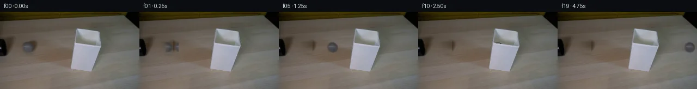

![首帧]()

Round 00
2026-11-06T06:26:50.186554+00:00像素候选变化代码 +308/−0inspection 更新
pixels 4d2acad01384c1fc · code 49aafe3f0637f2ef
查看本轮 generate.py 真实 diff
--- previous/generate.py
+++ current/generate.py
@@ -0,0 +1,308 @@
+#!/usr/bin/env python3
+"""PixelWorld-Text: Generate 20-frame animation of a tennis ball rolling across a table.
+
+Scene: A grey tennis ball rolls from left to right out of a black tube,
+across a light wooden table. A white lampshade sits on the right side.
+The ball passes behind the lampshade (occluded) during frames 9-13.
+
+Method:
+ 1. Extract ball sprite from first_frame.png using color-neutrality segmentation.
+ 2. Inpaint the ball hole in frame 0 using horizontal interpolation of table pixels.
+ 3. Compute linear trajectory and place rotated ball on clean background.
+ 4. Overlay lampshade pixels for occlusion.
+ 5. Render moving shadow beneath the ball.
+"""
+
+import numpy as np
+from PIL import Image
+from pathlib import Path
+import sys, os
+
+# Add workspace to path for artifact_io
+sys.path.insert(0, str(Path(__file__).parent))
+from artifact_io import save
+
+CASE_DIR = Path(__file__).parent
+TMP = CASE_DIR / '.tmp'
+TMP.mkdir(exist_ok=True)
+
+# ── Load first frame ──────────────────────────────────────────────
+first = np.array(Image.open(CASE_DIR / 'first_frame.png')).astype(np.uint8)
+H, W = 144, 256
+assert first.shape == (H, W, 3), f"Expected ({H},{W},3), got {first.shape}"
+
+# ── 1. Ball Extraction ────────────────────────────────────────────
+# Ball: neutral grey (R≈G≈B), medium brightness, near left side of table.
+# From analysis: center ~(50,66), radius ~9 px.
+BALL_CX0, BALL_CY = 50, 66
+BALL_RADIUS = 9
+BALL_DIAMETER = 2 * BALL_RADIUS # ~18 px
+
+# Extract a 24x24 patch centered on the ball (includes edges and nearby shadow)
+PATCH_HALF = 12
+bx1 = BALL_CX0 - PATCH_HALF
+by1 = BALL_CY - PATCH_HALF
+bx2 = BALL_CX0 + PATCH_HALF
+by2 = BALL_CY + PATCH_HALF
+
+ball_patch = first[by1:by2, bx1:bx2].copy().astype(np.float32)
+patch_h, patch_w = ball_patch.shape[:2]
+
+# Create ball mask: pixels with low color variance (neutral grey) and medium brightness
+r, g, b = ball_patch[:,:,0], ball_patch[:,:,1], ball_patch[:,:,2]
+grey_score = np.abs(r - g) + np.abs(r - b) + np.abs(g - b)
+brightness = (r + g + b) / 3.0
+
+# Ball core: grey-neutral and appropriate brightness
+ball_core = (grey_score < 20) & (brightness > 55) & (brightness < 110)
+
+# Expand to include fuzzy edges (dilate by 1px)
+from scipy.ndimage import binary_dilation
+ball_mask = binary_dilation(ball_core, iterations=1)
+
+# Create soft alpha mask using distance from ball center
+yy, xx = np.mgrid[0:patch_h, 0:patch_w]
+dist_from_center = np.sqrt((xx - PATCH_HALF)**2 + (yy - PATCH_HALF)**2)
+
+# Alpha: 1.0 inside ball radius, feathering outside
+inner_radius = BALL_RADIUS - 1
+outer_radius = BALL_RADIUS + 2
+alpha = np.clip((outer_radius - dist_from_center) / (outer_radius - inner_radius), 0, 1)
+alpha = alpha * ball_mask.astype(np.float32)
+
+# Ball sprite: ball pixels with alpha
+ball_sprite_rgb = ball_patch.copy()
+ball_sprite_alpha = alpha.copy()
+
+# Also extract a shadow region (dark pixels near ball bottom)
+# Shadow: dark table pixels below the ball
+shadow_mask_initial = (brightness < 60) & (dist_from_center < BALL_RADIUS + 4) & (yy > PATCH_HALF - 2)
+shadow_mask = binary_dilation(shadow_mask_initial, iterations=1)
+shadow_alpha = np.clip((outer_radius + 2 - dist_from_center) / 3.0, 0, 0.6) * shadow_mask.astype(np.float32)
+
+# ── 2. Clean Background (inpaint ball hole in frame 0) ───────────
+clean_bg = first.copy().astype(np.float32)
+
+# Ball bounding box in frame coordinates (expanded for safety)
+hole_y1 = max(0, BALL_CY - BALL_RADIUS - 3)
… diff truncated; 221 more lines …